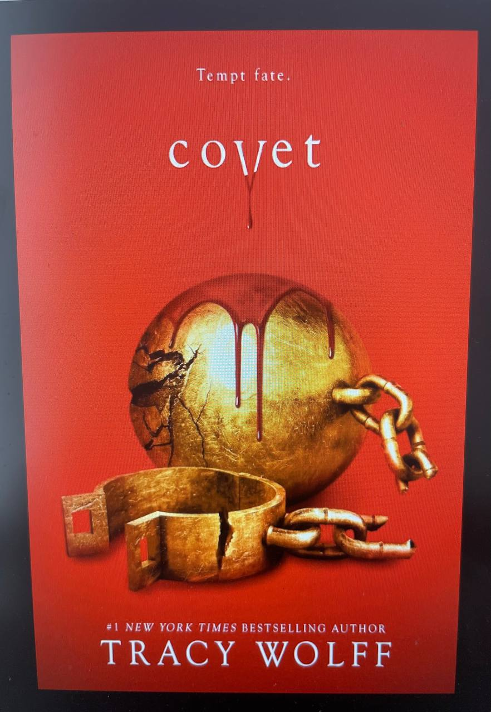

"Половина жовтого сонця", Чімаманда Нгозі Адічі.
Ім'я Чімаманда Нґозі Адічі ви точно чули: нігерійська письменниця, якій вдалося привернути нову хвилю уваги до сучасної африканської літератури; феміністка, активістка, учасниця рейтингу 100 найвпливовіших жінок світу за версією BBC. Саме Чімаманда Нґозі Адічі — авторка відомої статті "Ми всі маємо бути феміністами", яка 2016 року з‘явилася в якості лозунгу на футболках Dior. Українською виходить її другий роман "Половина жовтого сонця", який присвячено долі невизнаної країни Біафри на сході Нігерії. Герої книги — п'ятеро біафранців: сільський підліток Уґву, сповнений революційних ідей професор Оденібо, британський емігрант Річард та не схожі одна на одну близнючки Оланна і Кайнані, які живуть під час війни. Вони кохають, зраджують, обговорюють політику, тікають від обстрілів, знаходять себе, втрачають близьких і попри все вірять у перемогу.
"Дейзі Джонс і The Six", Тейлор Дженкінс Рід.
Українською виходить новий роман популярної американської письменниці Тейлор Дженкінс Рід, авторки гітів "Сім чоловіків Евелін Г'юґо" та "Світанок Малібу". "Дейзі Джонс і The Six" розповідає про злети та падіння вигаданого рок-гурту 1970-х років. Лос-Анджелес, клуби на Сансет-Стрип, секс, наркотики і рок-н-ролл — у "Дейзі Джонс і The Six" є все, до того ж це захопливо, майстерно розказана історія. Роман здобув нагороду Goldsboro Books Glass Bell Award у 2020 році, а в 2023-му був екранізований Amazon у вигляді мінісеріалу, де роль Дейзі зіграла онука Елвіса Преслі Райлі Кіо.
"Дім на краю світу", Майкл Кеннінгем.
Видавництво "Лабораторія" випускає один з найкращих американських романів 1990-х років — "Дім на краю світу" пулітцерівського лауреата Майкла Каннінгема, якого ви скоріше за все знаєте як мінімум за романом "Години". "Дім на краю світу" — захопливий, сучасний, відвертий та глибокий текст про трьох друзів, учасників незвичайного любовного трикутника — Джонатана, Боббі та Клер, які дорослішають, кохають та шукають себе в Америці у 60—90-ті роки ХХ століття.
"Жага", Трейсі Вульф.
Продовження вже певною мірою культової серії романів "Жага" від Трейсі Вульф — авторки бестселерів The New York Times і USA Today, яка написала понад 60 фентезі-історій про драконів, вампірів та інших фантастичних персонажів. "Жага" — новий роман з епічного фентезі-циклу Вульф, що розповідає про пригоди незвичайної дівчини Грейс з паранормальними здібностями, що навчається в Академії Катмере, де дівчину оточують суцільні відьми та вампіри. Якщо ви любите фентезі в стилі саги "Сутінки", то цикл Трейсі Вульф буде цікавий.
"Ананасова вулиця", Дженні Джексон.
"Ананасова вулиця" Дженні Джексон — сучасна сімейна сага, в центрі якої — три жінки з дуже заможного бруклінського клану. Основна тема роману — сім'я та гроші як джерело щастя та бід. У 2023 році гострий, смішний та напрочуд актуальний роман Дженні Джексон, який є її дебютною книжкою, увійшов до списку бестселерів "Нью-Йорк Таймс", тож велика радість, що він так оперативно видається українською мовою.
"Коли чоловік один", Джеймс Метью Баррі.
Коли чоловік один" — роман про реалії життя звичайного журналіста-початківця, юнака з провінції, який потрапляє у вир кар’єрних змагань лондонських редакцій та газетярських буднів. Сюжет зачіпає історією любові, яка рятує героя від самотності. Його автор — відомий шотландський письменник, журналіст і драматург, почесний президент Единбурзького університету Джеймс Метью Баррі, який увійшов в історію як автор всесвітньо відомої дитячої казки "Пітер Пен".
"Ми робили бомби для Гітлера", Марша Форчук Скрипух.
Новий роман україно-канадської письменниці Марша Форчук Скрипух, творчість якої значною мірою відображає та осмислює досвід еміграції в Канаду її родини. "Ми робили бомби для Гітлера" — продовження її роману 2023 року "Викрадене дитя", зворушливої історії про Ліду та її молодшу сестру Надію, яких у ранньому дитинстві розділили нацисти. Ліду відправляють у трудовий табір, де вона працює від ранку до ночі, харчуючись хлібом та юшкою, одягнена в одну лише тоненьку сукню і без взуття. Навіть якщо їй удасться пережити війну, як вона знову знайде свою сестру?
"Космос, прийом", Марк Лівін.
Янг-едалт — шалено популярний у всьому світі літературний жанр, який формально вважається літературою для підлітків. Проте аудиторія цих романів значно ширша, а визначальним для них є "нерв часу", який майстерно передають автори: ці тексти часто присвячено вразливим молодим людям, які гостріше відчувають та переживають все, що відбувається навколо, — і саме тому цікаві людям абсолютно різного віку. Якщо цей жанр вам відгукується, то радимо звернути увагу на нову книгу письменника та журналіста, співавтора психологічного подкасту "Простими словами" Марка Лівіна. У січні виходить його повість "Космос, прийом" — ніжна та зворушлива історія про підлітку Зоряну, "м’яку, потайливу і трохи незграбну" дівчину 15 років. Одного дня Зоряна вирушає на пошуки батька – людини, яку вона ніколи не знала і про якого мовчить вся її родина, і бажання побачити якого фактично визначає усе її життя. "Космос, прийом" — важлива книжка про пошук себе та ментальне здоров’я, про дружбу та складність світу та про те, що життя, зрештою, прекрасне, хоч і непросте.
"Я не знаю як про це писати", Ірена Карпа.
"Я не знаю, як про це писати" — унікальна збірка. Це твори авторок-учасниць курсу письма Ірени Карпи "My Story", який вона провела у 2023 році. Це історії проживання російсько-української війни, які, художньо переосмислені та втілені в оповідання й есеї, звучать розмаїто, але є голосами одного спільного досвіду. У збірку увійшли тексти 33 авторок — можливо, когось з них чекає велике літературне майбутнє? Наприкінці збірки Ірена Карпа пропонує читачам також спробувати записати власну історію або просто свої думки, адже у складні часи письмо має особливо терапевтичний ефект.
"Жінка в мені", Брітні Спірс.
"У мемуарах Брітні Спірс сильніша, ніж будь-коли... Це так беззаперечно й відверто, що здається, "Жінка в мені" створена, щоб її прочитати на одному диханні. Майже неможливо не пройнятися і по-справжньому не обурюватися від імені Спірс, чия гіркота через жахливі обставини останнього десятиліття її життя... пом’якшується стійким оптимізмом", — пише книжкова оглядачка New York Times Лія Ґрінблатт. "Жінка в мені" — безумовно, найгучніші мемуари 2023 року, в яких одна з найвідоміших артисток світу відверто розповідає про своє дитинство, аборт, аб'юзивні стосунки з власним батьком та чоловіками тощо. Відвертість Брітні Спірс, її талант оповідачки, а також невигадані життєві драми та колізії роблять цю книжку захопливим читанням. Українською мемуари співачки виходять у 2024 році у видавництві "Наш формат".
"Дивокрай", Енні Лебовіц.
Arthuss видають фотоальбом легендарної фотографки Енні Лейбовіц. За естетичною обкладинкою зібрано 350 робіт Лейбовіц, зроблених за останні 50 років, серед них портрети Ніколь Кідман, Серени Вільямс, Піни Бауш, РуПола, Леді Гаги, Королеви Єлизавети, Ненсі Пелосі та багатьох інших знаменитостей. Відкриває книгу передмова Анни Вінтур, а всередині — коментарі Енні Лейбовіц та її інтерв’ю з акторкою Керрі Малліґан.
"Атоми і попіл", Сергій Плохій.
Один з найвідоміших світових істориків, професор Гарвардського університету Сергій Плохій випускає захопливу книгу-дослідження ядерних катастроф. Під ефектною обкладинкою видання "Атоми і попіл" зібрано історії шести найбільших ядерних катастроф, що спіткали людство у ХХ столітті: аварія на Чорнобильській АЕС, руйнування станції "Фукушіма-1" унаслідок цунамі, ядерні випробування на атолі Бікіні, Киштимська аварія, пожежа на станції "Віндскейл" та аварія на "Три-Майл-Айленді". Навряд чи варто пояснювати, чим ця книга важлива та актуальна сьогодні.
"Спогади Надії Суровцевої".
Надія Суровцева — українська історикиня, журналістка, редакторка іншомовних видань Міністерства закордонних справ УНР та громадська активістка, яка все життя обстоювала вільну українську державу. У 1930-х роках була засуджена та заслана в табори ГУЛАГ, де провела два десятиліття. У "Коморі" видають спогади Надії Суровцевої (вперше вони вийшли 1996 року, проте у видавництві зазначають, що це абсолютно нове видання) — важливу книжку не тільки про життя самої Суровцевої, але й про історію та культуру України та розбудову української незалежності у ХХ століття.